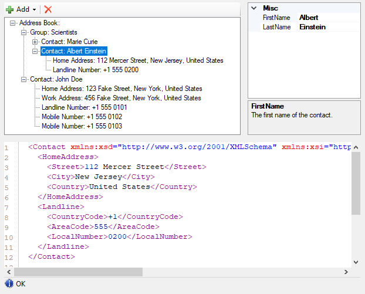

NanoByte Structure Editor
NanoByte Structure Editor is a WinForms library that helps you build split-screen editors for your data structures, consisting of:
- a collapsible tree-view of the data structure,
- a graphical editor for the currently selected node in the tree (PropertyGrid or custom) and
- a text editor (based on ICSharpCode.TextEditor) with a serialized (XML) representation of the currently selected node.
This allows you to create an IDE-like experience for your users when editing complex domain specific languages, configuration files, etc..

Usage
Add a reference to the NanoByte.StructureEditor.WinForms NuGet package to your project. It is available for .NET Framework 2.0+.
Initialization
Create an instance of StructureEditor<T> and add it to your Form:
var editor = new StructureEditor<MyData>();
Controls.Add(editor);
Alternatively, you may want to derive your own class from StructureEditor<T>. This will allow you to use the graphical WinForms designer in Visual Studio (which does not support generic types) to place the Editor on your Form.
public class MyDataEditor : StructureEditor<MyData>
{}
You need to "describe" your data structure to the Editor. You can do this directly after instantiating the editor or in the constructor of your derived class.
- Call DescribeRoot() and then use the fluent API provided as a return value to describe the properties on your main data type.
- Call Describe
() to describe the properties on a data typeTContainerexposed by another property. You can use multiple calls with different type parameters to describe arbitrarily deep hierarchies.
The fluent API provides the following methods:
.AddProperty()describes a simple value property..AddPlainList()describes a non-polymorphic list..AddList()describes a polymorphic list. After calling it you need to chain.AddElement()calls for each specific type of element the list can hold.
There are numerous overloads for each of these methods, e.g., allowing you to specify a custom editor control for a data type or to keep the auto-generated one.
editor.DescribeRoot("Address Book")
.AddPlainList("Group", x => x.Groups);
editor.Describe<IContactContainer>()
.AddPlainList("Contact", x => x.Contacts);
editor.Describe<Contact>()
.AddProperty("Home Address", x => PropertyPointer.For(() => x.HomeAddress))
.AddProperty("Work Address", x => PropertyPointer.For(() => x.WorkAddress))
.AddList(x => x.PhoneNumbers)
.AddElement("Landline Number", new LandlineNumber())
.AddElement("Mobile Number", new MobileNumber());
Storage
Use the Open() method to load an XML file into the editor:
editor.Open(CommandManager<AddressBook>.Load(path));
Use the Save() method on the CommandManager property to save the editor's content as an XML file:
editor.CommandManager.Save(path);
Take a look a the sample project for a more complete setup, including undo/redo functionality.